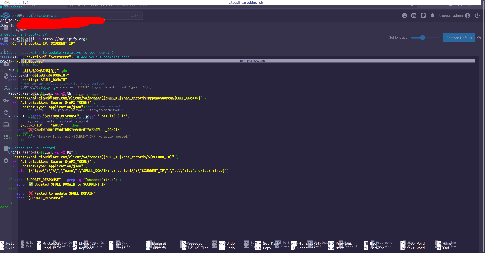
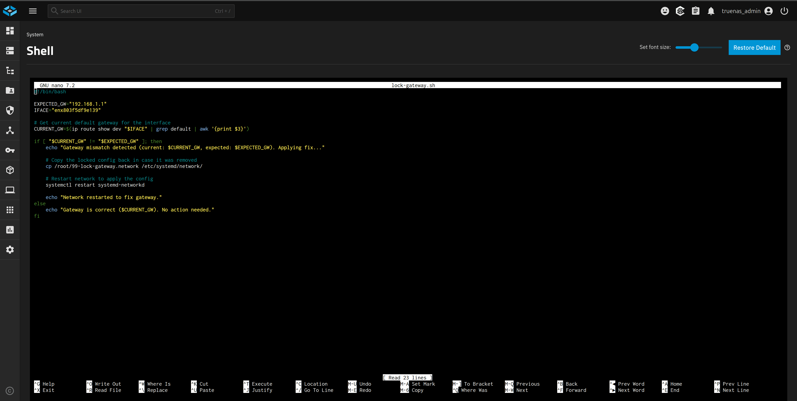

System Automation Scripts
Essential utilities for homelab management
DDNS Updater

Technical Details
- Purpose: Automatically updates Cloudflare DNS when public IP changes
- Frequency: Runs every five minutes via cron job
- Dependencies: curl, jq, mailutils
Example Cron Entry
*/5 * * * * /usr/local/bin/ddns-updater.sh
Gateway IP Locker

Technical Details
- Purpose: Maintains static network configuration
- Frequency: Runs at boot + every 5 minutes
- Checks: Gateway IP, DNS servers, interface settings
- Alert Method: System notifications
Future Scripts
- JobAutoApply Bot: Automated job applications (Python)
- Minecraft SCADA: Real-time server monitoring